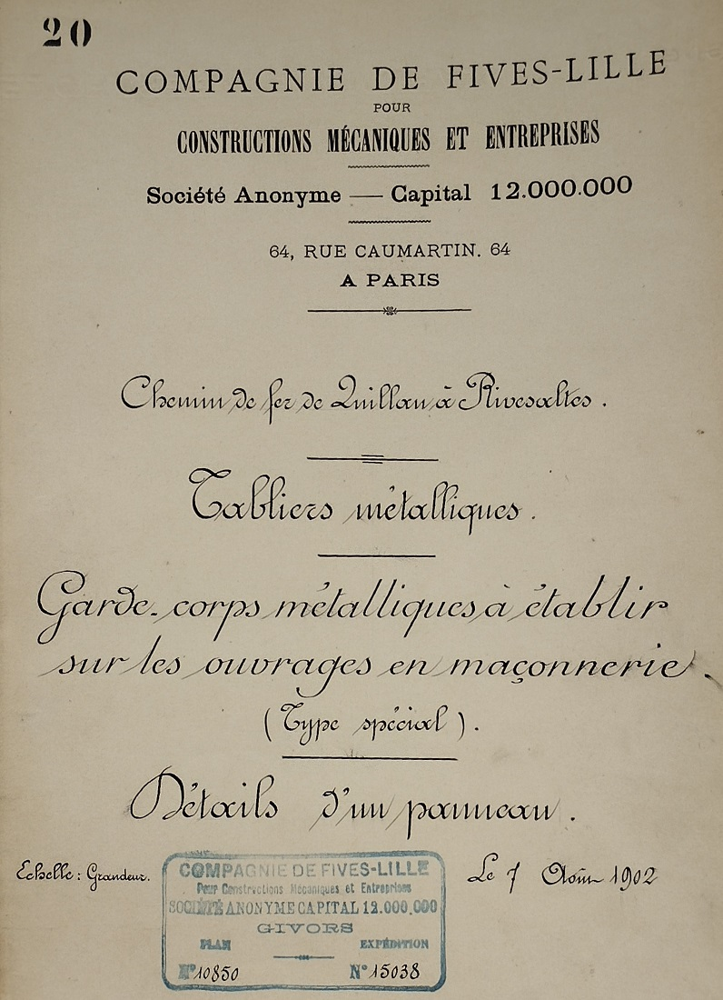
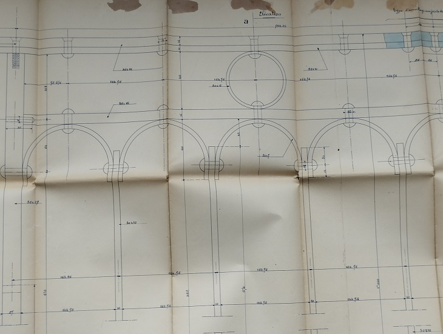
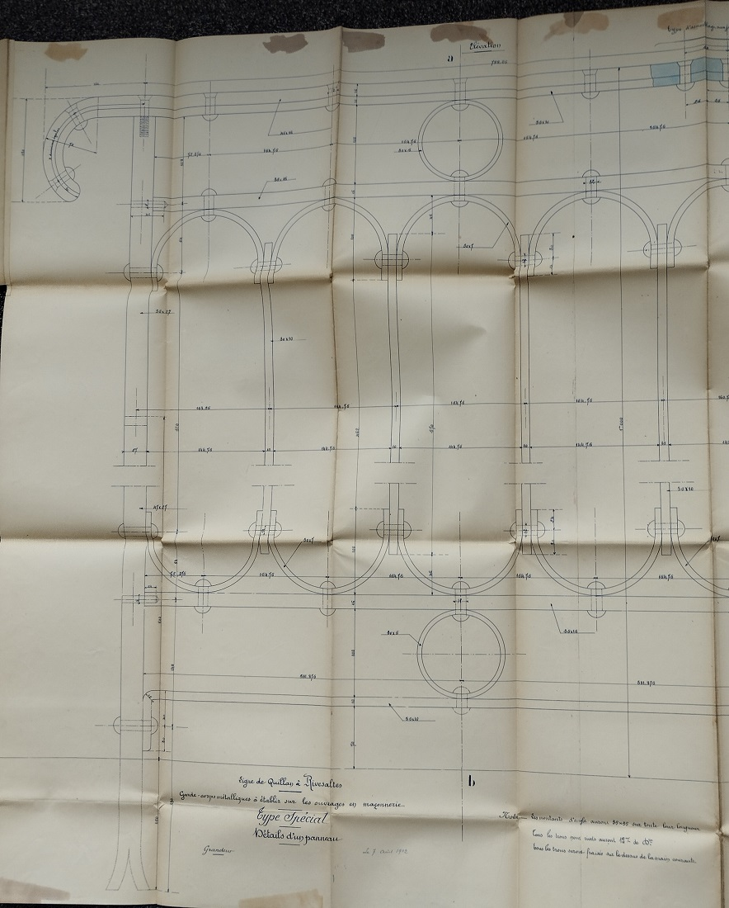
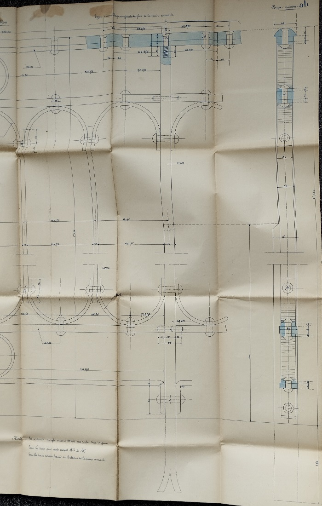
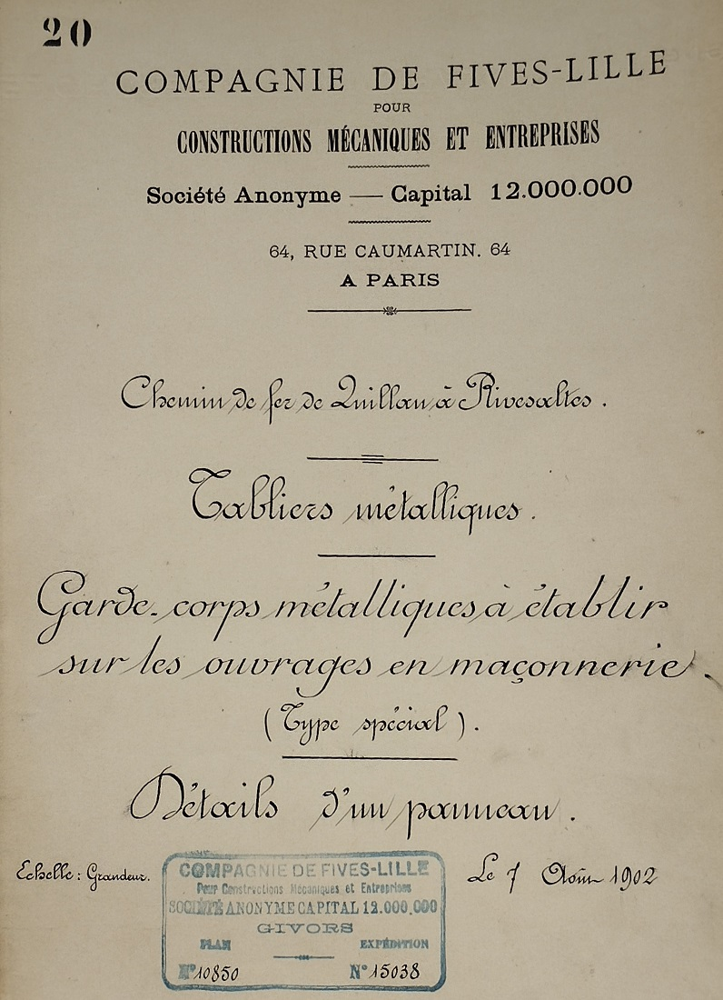
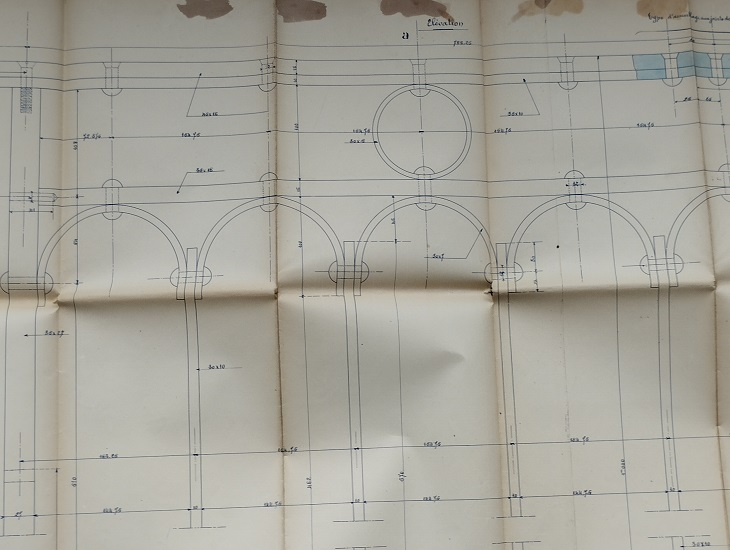
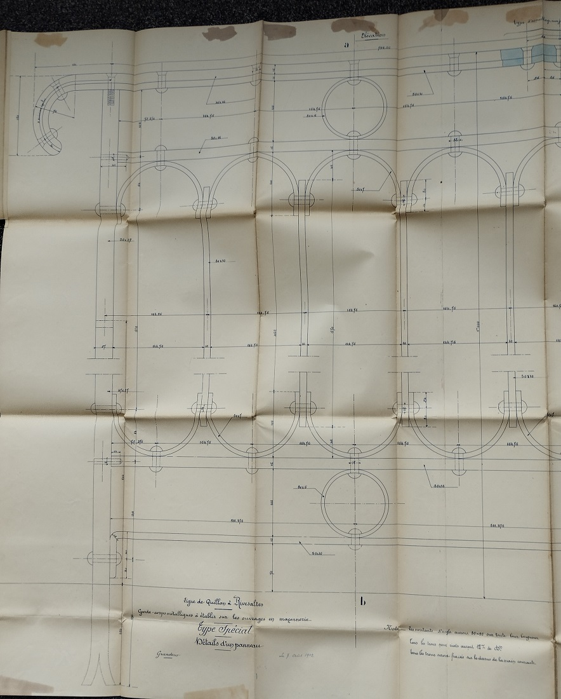
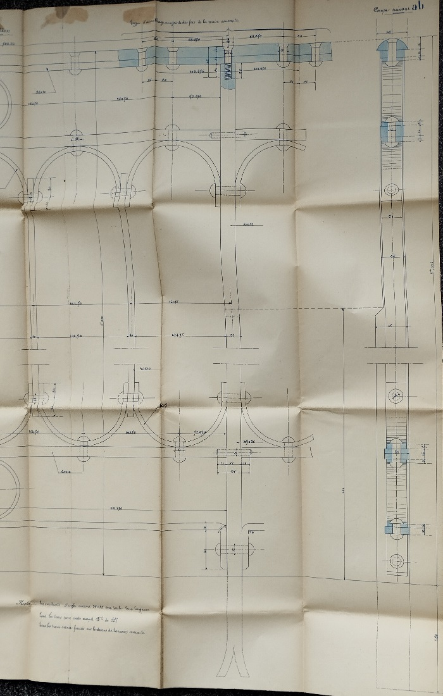

Pour alléger la page sur l'historique de voie ferrée, je crée cette annexe avec les informations collectées aux archives départementales de Carcassonne sur les gardes corps métalliques à établir sur les ouvrages en maçonnerie de la partie audoise de la ligne
 cliquer sur l'image pour une meilleure définition




cliquer sur l'image pour une meilleure définition



